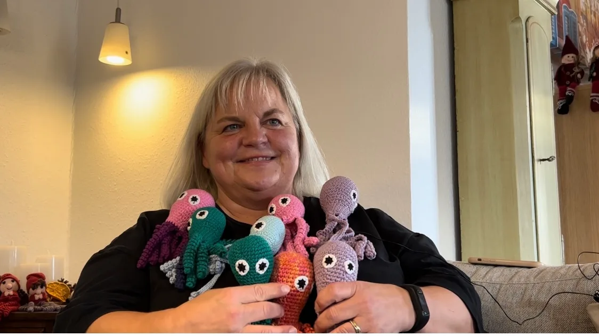
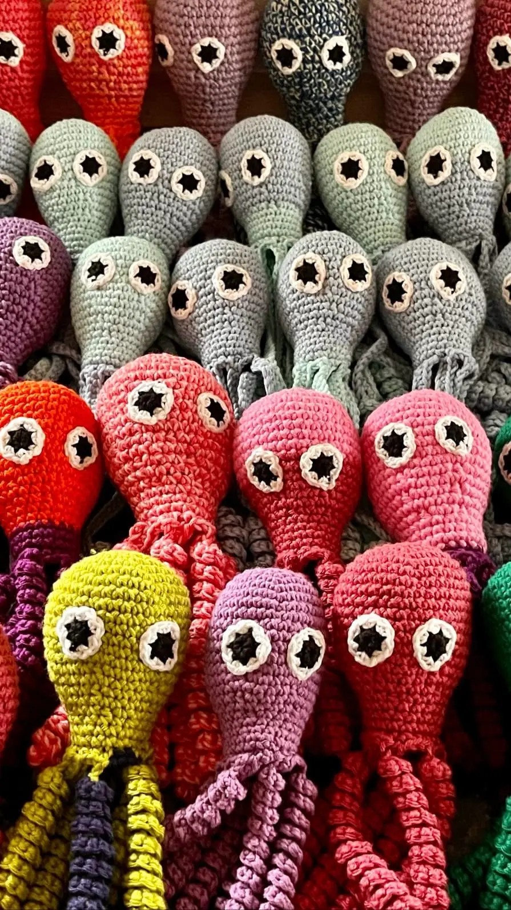
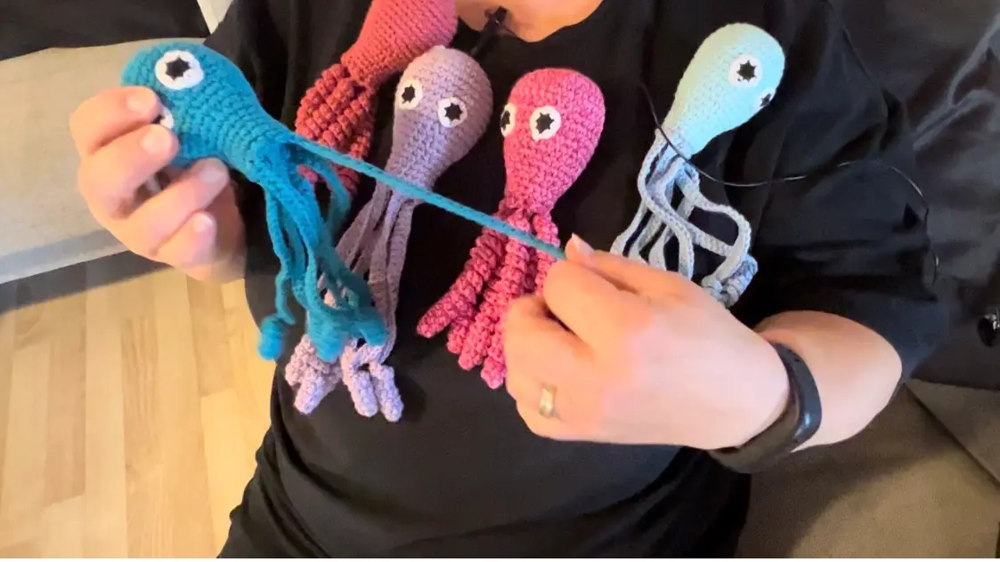
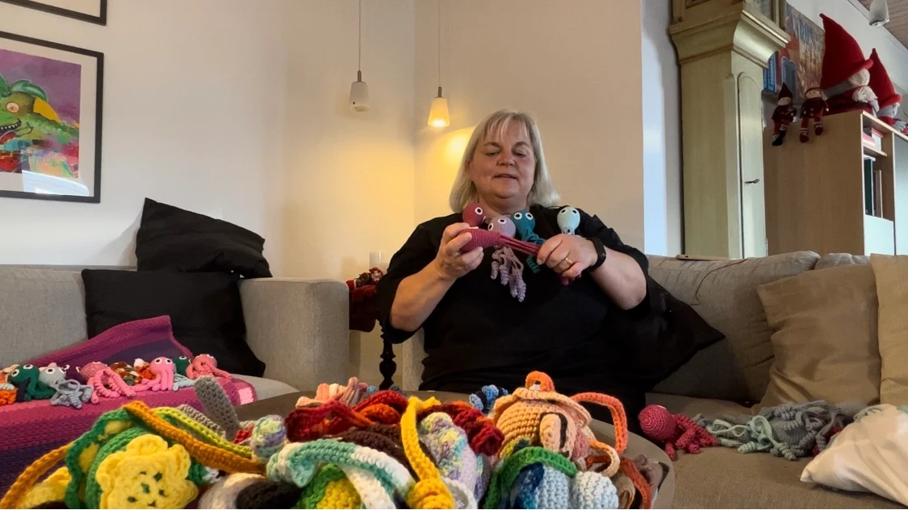
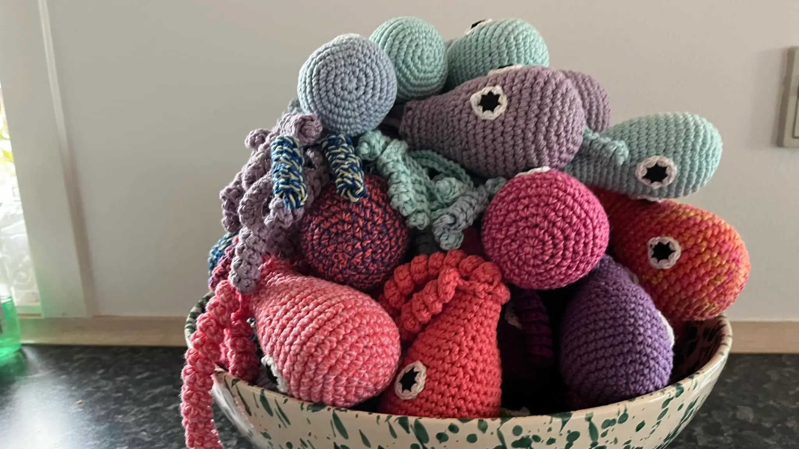

En passion for sprutter
Søde Pernille
Jeg og Agnete fik lov til at interviewe den søde hækle-entusiast Pernille. Hun laver sprutter til kuvøsebørn og hospitaliserede børn. Sprutterne kommer i alle former og farver, og bliver lagt sammen med børn, der er født for tidligt. De skal efterligne navlestrengen, som babyerne ligger og berører inde i maven på forældren.
Galleri



